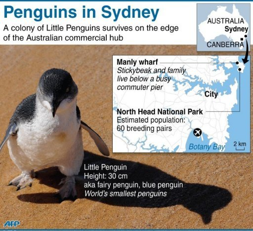
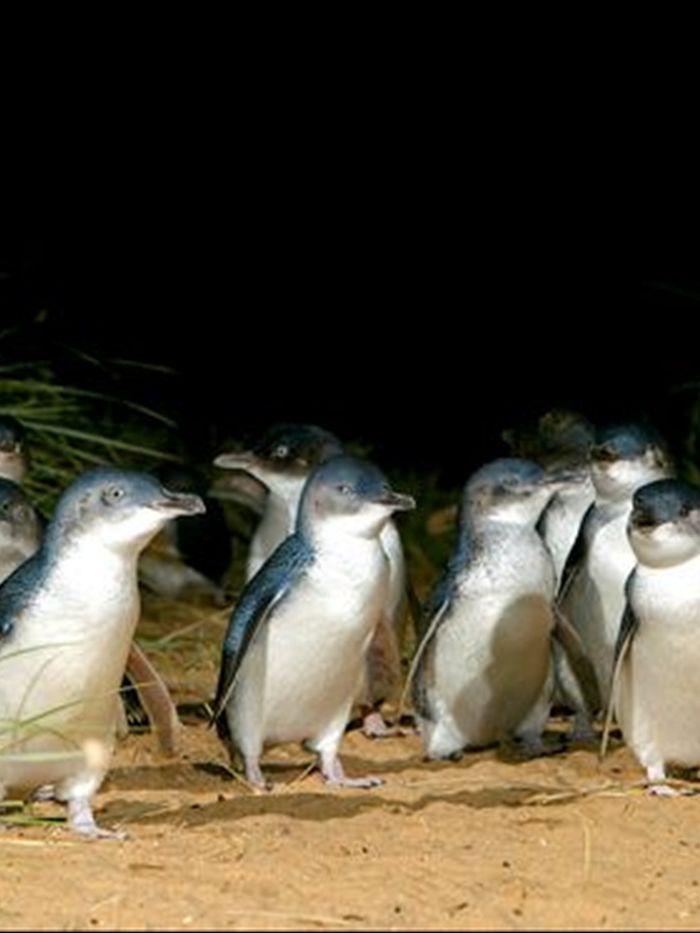

What We Do?
The aim of the Penguin Warden scheme is to ensure that the penguins can breed in safety and away from human or dog interference. The wardens try and ensure:
- Patrol of beaches and Penguin breeding areas – prevent dogs being on beaches and unleashed within 50 metres of penguin nesting areas.
- Prevent contact with penguins or nesting areas.
- Prevent use of flash photography of penguins.
- Educate and inform public about penguins and draw attention to Council and NPWS regulations regarding dogs, boating, interference with penguins and fishing.
The volunteer penguin wardens patrol critical areas nightly from the beginning of the season when the first penguins are noted to have come back in to their burrows.
Temporary signage and barriers are erected by volunteers to protect the birds whilst they are nesting and prevent unleashed dogs and public from getting too close to the birds or disturbing their nests.
Manly Council recently installed permanent steel gates and adequate signage.
History of Penguin Wardens
In 2005 National Parks called for volunteers from local community and from wildlife carer organisation to help establish a team of people for the 2005/6 breeding season following destruction of nests and eggs on a couple of beaches and predation of penguins by dogs.
After a dog attack and the death of one chick at Manly Wharf, the Penguin Wardens commenced a program of increased public awareness and the establishment of regular nightly patrols to watch over penguins at Wharf.
Manly Wharf and Federation Point have become focal points for crowd control as penguins were made known in local press and crowds wanting to see the Penguins have increased.
Contact
Little Penguin Recovery Coordinator
Environment Line - 131 555 (24 hours, 7 days)
NPWS Penguin Wardens, Education and Monitoring:
National Parks and Wildlife Ranger - (02) 9960 6266
We are always on the lookout for Penguin Wardens.
For more information email us at mec@manly.nsw.gov.au
alternatively come down and visit us at the Manly Environment Centre.
Manly Volunteer Penguin Wardens 999 Manly Beach Rd. Manly NSW 2095 | manlyvolunteerpenguinwardens.ORG.AU | 13 TCO (13 45 67)
Gifts over $2 to the social work of Manly Volunteer Penguin Wardens in Australia are tax deductible. Details ABNs: 46 789 012 345 (NSW)
Copyright © 2018 Manly Volunteer Penguin Wardens All rights reserved. Privacy Policy ♦ Terms of condition ♦ Developer detail ♦ Links ♦ more...